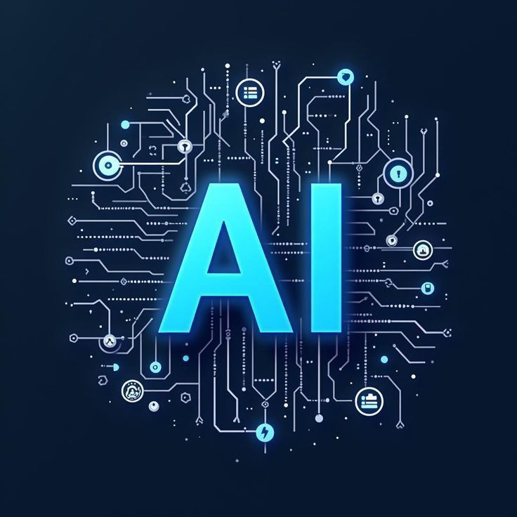
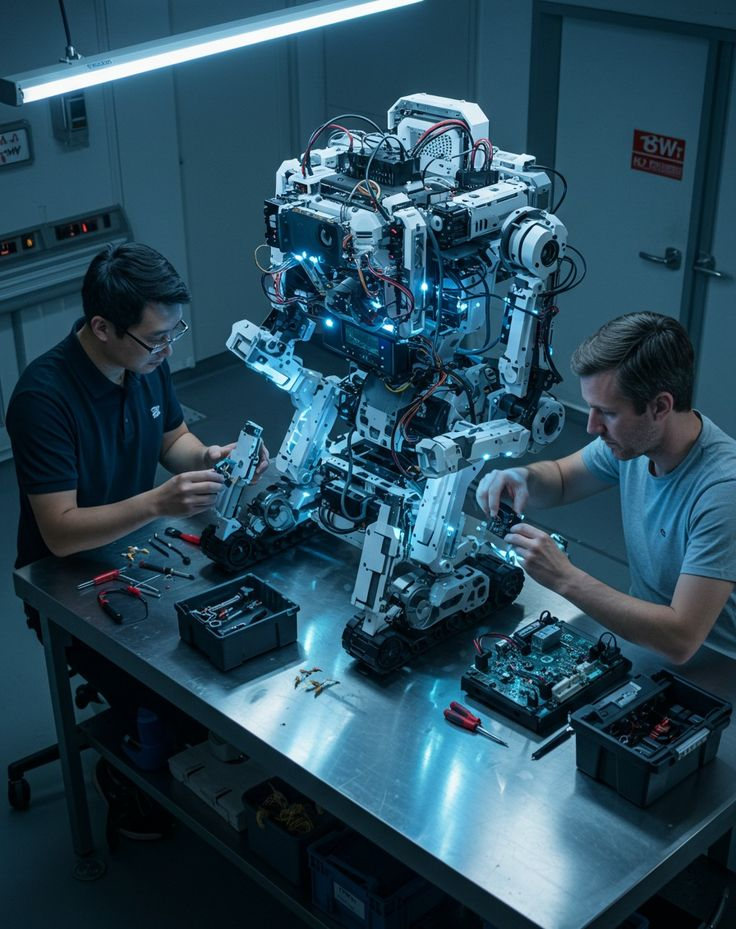

Nos passions
Explorez vos passions en informatique

Programmation
La programmation est le cœur de l'informatique. Elle permet de créer des applications, des sites web et des logiciels tout en stimulant la logique et la créativité.

Intelligence Artificielle
L'IA ouvre la voie à la création de systèmes intelligents, capables d'apprendre, d'analyser des données et de résoudre des problèmes complexes.
Cybersécurité
La cybersécurité protège les données et les systèmes. Découvrir cette passion permet de comprendre les vulnérabilités et d'apprendre à sécuriser les informations.

Gaming
Le gaming combine divertissement et technologie. Il permet de tester des stratégies, développer sa réactivité et découvrir l'univers du développement de jeux.

Robotique
La robotique mêle mécanique et programmation. C'est une passion qui permet de créer des machines intelligentes et d'expérimenter avec l'automatisation.

Open Source
Contribuer à l'open source favorise l'apprentissage collaboratif et la création de logiciels accessibles à tous, tout en développant ses compétences.